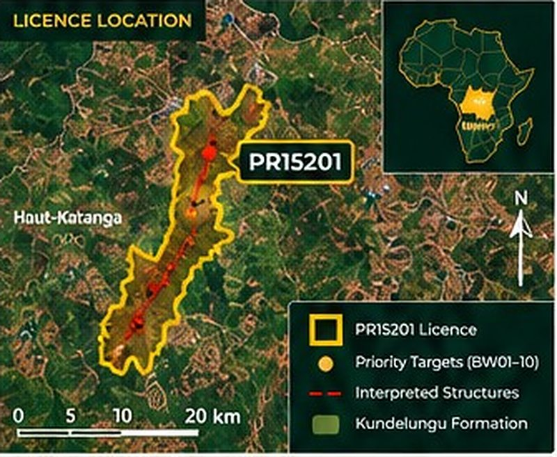
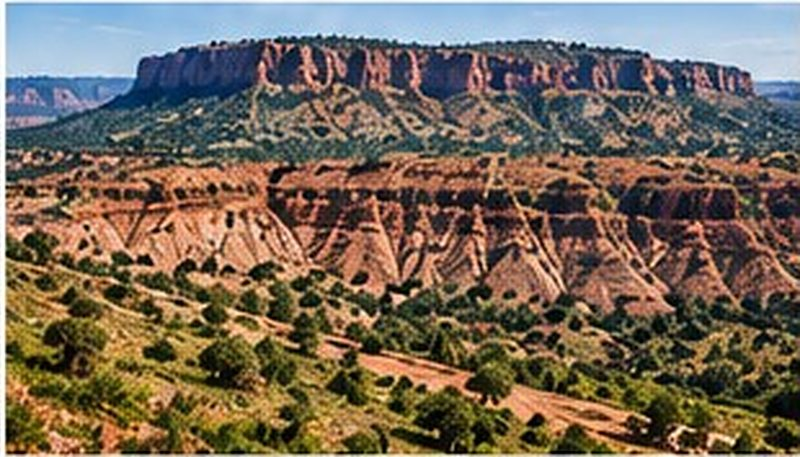
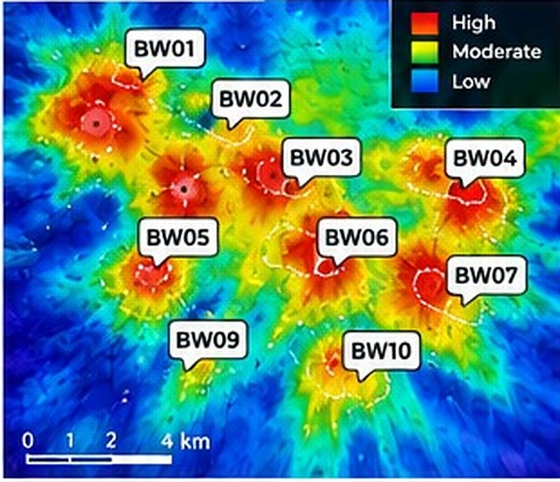
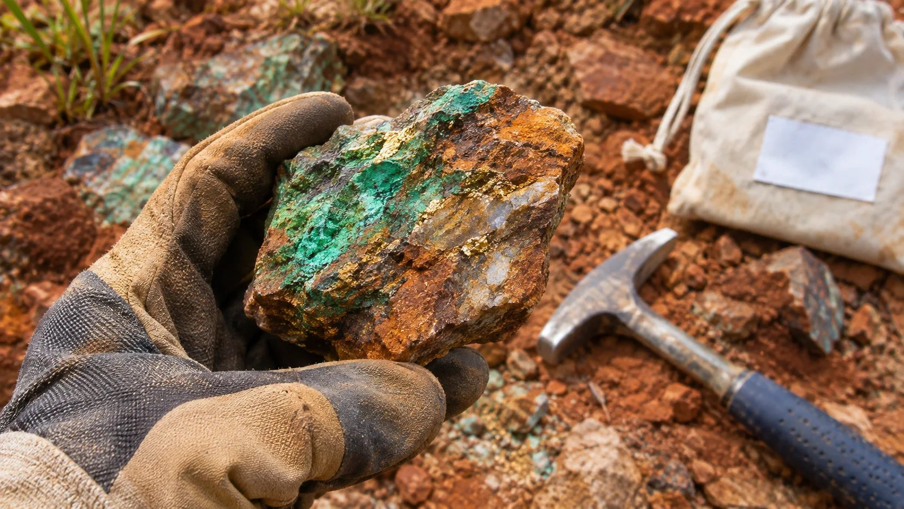
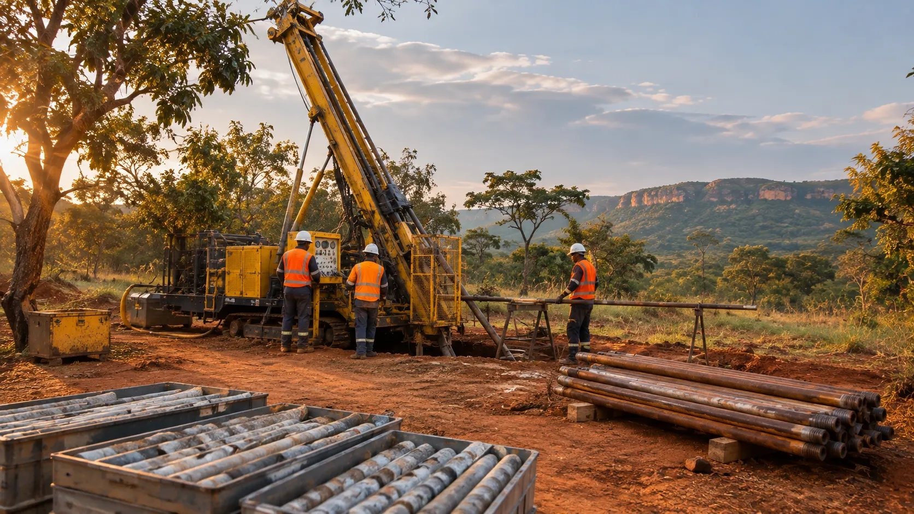

Project overview
Pumba (PR15201) is a copper and gold project located in the Haut-Katanga Province of the Democratic Republic of the Congo, within the Kundelungu formation.
Historic work and recent exploration indicate strong IP anomalies with targets from surface to depth. The project offers potential for oxide, mixed and sulphide mineralisation with both copper and gold upside.
Guilgal International is working with local partners to advance exploration, including detailed geophysical interpretation, target generation and a phased drilling programme.
Key highlights
- Exploration licence PR15201 secured
- Located in the mineral-rich Kundelungu formation
- Strong IP geophysical anomalies
- Multiple priority drill targets (BW01 to BW10)
- Copper and gold potential (oxide to sulphide)
- Access to experienced drilling team and regional support
Project location

Regional geology

- Located within the Kundelungu formation, a major Central African Copperbelt analogue.
- Favourable stratigraphy for sediment-hosted copper with gold potential.
- Evidence of oxide, mixed and sulphide mineralisation.
- Regional setting with multiple high-priority targets.
IP geophysics: chargeability

Proposed drill targets (Gedeon)
| Target | Depth range (m) | Comment |
|---|---|---|
| BW01 | 0 to 200 | Priority target |
| BW02 | 70 to 200 | Strong anomaly |
| BW03 | 100 to 200 | Key target |
| BW04 | 100 to 150 | Shallow target |
| BW05 | 70 to 200 | Strong anomaly |
| BW06 | 100 to 150 | Key target |
| BW07 | 90 to 100 | Shallow target |
| BW09 | 90 to 200 | Priority target |
| BW10 | 90 to 200 | Priority target |
Drilling to test IP anomalies and define copper and gold mineralisation from surface to depth.




Exploration programme
- Site visit and detailed geological reviewConfirm targets and refine drill programme.
- Complete geophysical interpretationIntegrate IP data and generate drill targets.
- Phase 1 drilling programmeTest priority targets (BW01 to BW10).
- Ongoing exploration and evaluationFollow-up drilling and broader project assessment.
Indicative timeline
- Q4 2026Site visit and target review
- Q1 2027Commence drilling
- Q2 2027Assays and initial results
- Q3 to Q4 2027Follow-up drilling
- 2028+Resource definition
Timeline is indicative and subject to funding, access, seasonal conditions and regulatory approvals.
Partnership opportunity
Pumba is a copper and gold exploration project in a proven mineral province. We welcome discussions with investors, joint-venture partners and mining companies to advance exploration and development.